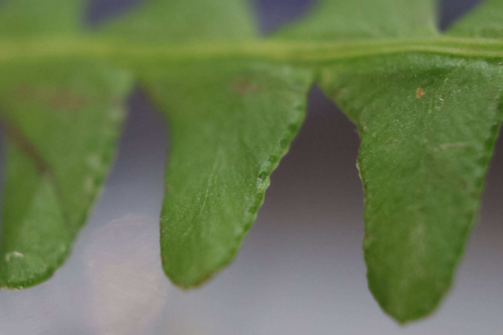
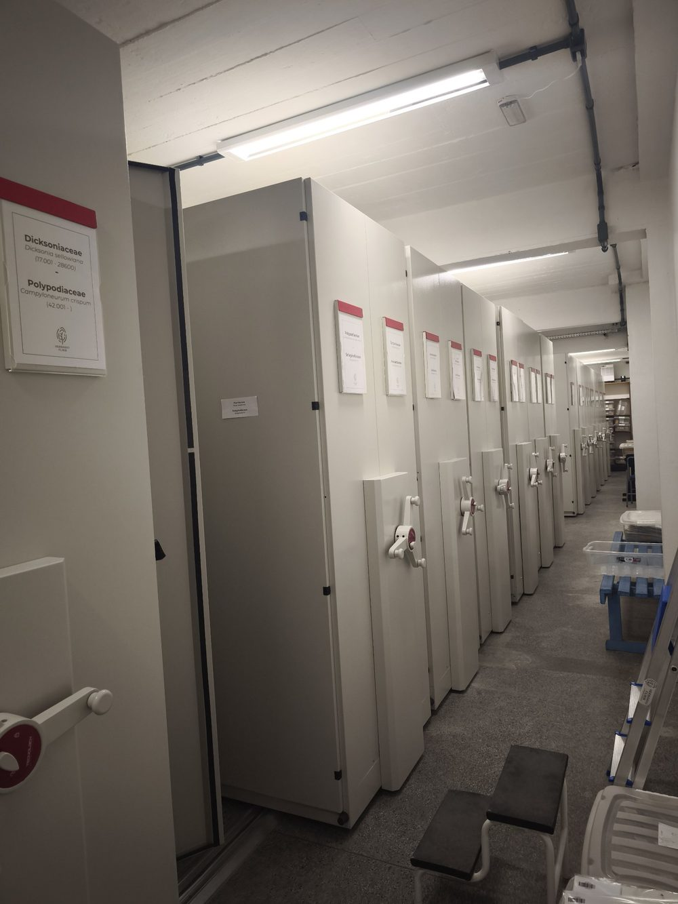

Gleicheniaceae diversification in tropical mountains
A paper in the Journal of Biogeography shows tropical mountain systems as cradles of diversification for the forking ferns.
Read the paper →Botany, collections and Atlantic Forest research
At the Regional University of Blumenau (FURB), in southern Brazil, one space brings together two things: the botanical collection of the Dr. Roberto Miguel Klein Herbarium and the research group led by Prof. André Luís de Gasper, which studies lycophytes, ferns and the forests of the Brazilian Atlantic Forest.
Versão em portuguêsVersión en españolA paper in the Journal of Biogeography shows tropical mountain systems as cradles of diversification for the forking ferns.
Read the paper →A fern endemic to the Serranía de los Yariguíes, Colombia, described in Phytotaxa.
Read the paper →A paper in Perspectives in Ecology and Conservation calls for a research collaboration network to understand the adaptation potential of the hotspot.
Read the paper →The group is part of this new FAPESP-funded project, which will synthesize biodiversity and carbon stock data for Brazilian vegetation.
Prof. André Luís de Gasper was elected president of the Botanical Society of Brazil (SBB) for 2027–2030.
A paper presents the inventory's approach to monitoring biodiversity in hyperdiverse forests.
Read the paper →Led by Prof. André Luís de Gasper, with members from undergraduate research to postdoctoral level.
The Atlantic Forest is one of the world's hotspots of biodiversity: highly diverse, rich in endemic species and reduced to fragments. This makes it a natural laboratory for questions that matter for tropical forests worldwide.

How do fern species arise and how should they be delimited, and what does their evolutionary history reveal about plant diversification in the tropics?
Integrative taxonomy, phylogenetics, biogeography and chromosome evolution, using molecular data, morphometrics, spores, flow cytometry and karyology.
Key papers
How do forests respond to climate and human pressure, and what does this mean for tropical forest biodiversity and carbon?
Forest structure, dynamics, tree mortality and functional traits, species distributions and climate change, based on long-term FlorestaSC data.
Key papers
How can scientific collections become open, reliable data for research and conservation?
Curation, digitization, assessment and policy for Brazilian biological collections, building on the experience of the FURB Herbarium.
Key papersPteridophyte Phylogeny Group (PPG) · Missouri Botanical Garden · University of Cambridge · Global Forest Biodiversity Initiative (GFBI) · sPlot · Flora e Funga do Brasil · partners in Colombia and across Latin America
Projects led by the group or with team participation.
Morphometrics of the Parablechnum cordatum complex and chromosome number evolution in Blechnaceae.
2024–present · CNPq Research Productivity FellowshipRevision of the South American species, the first complete plastome of Gleichenella and the global biogeography of the family.
2025–present · FAPESCContinuation of FlorestaSC to support public land management and natural resource conservation in Santa Catarina.
2022–present · Santa Catarina State GovernmentA multi-user laboratory hub to characterize and monitor human impacts on biodiversity.
2025–present · FINEPInfrastructure for the FURB Herbarium, the Glomeromycota Collection (CICG) and the Zoological Collection.
2025–present · FINEPDistribution modelling, in vitro culture and cryopreservation of spores and gametophytes for ex situ conservation.
2025–present · FAPESCClimate impacts on ferns in southern Brazil and the Colombian Andes, with environmental education for young people.
2025–present · FAPESCA plant identification platform based on near-infrared (NIR) spectroscopy.
2025–present · FAPESCSynthesis of biodiversity and carbon stock data for Brazilian vegetation in an online platform.
2026–present · FAPESP
Professor at FURB, group leader and curator of the Herbarium since 2012. A CNPq research productivity fellow, he works on fern taxonomy, systematics and biogeography and coordinates the Santa Catarina Floristic and Forest Inventory. He coordinated the Brazilian Herbaria Network (2014–2023) and is a co-author of the PPG I classification of lycophytes and ferns.
Graduate students and postdocs who trained in the group. Those still with us at a later stage are listed in the current team.
Recent highlights. The full list is on Lattes and Google Scholar.
All papers, chapters and books, kept up to date on these profiles.
How to request the Inventory books (in Portuguese) →
Open science: data and scripts from our published papers are public on the group's GitHub. New repositories are added here as papers are published.
We welcome students and researchers from Brazil and abroad interested in ferns, tropical forests and biological collections.
FURB undergraduates can join projects with research scholarships (CNPq, FAPESC and FURB programs) or as volunteers.
Supervision in FURB's graduate programs in Biodiversity (PPGBio), Environmental Sciences (PPGCA) and Forest Engineering, with scholarships subject to calls (CAPES, CNPq, FAPESC).
Proposals aligned with the group's research lines, submitted jointly to postdoctoral fellowship calls.
Researchers and students from other institutions, including from abroad, can carry out projects at the Herbarium and use the Multi-User Laboratory equipment.
Email Prof. André with a short CV, a few lines on what you would like to research, and the program or fellowship you plan to apply for.
FURB's botanical collection, open for consultation, exchange and visits.
Founded in 1990, the Herbarium is named after the botanist and ecologist Roberto Miguel Klein, a FURB professor and a leading scholar of the Santa Catarina flora.
It houses collections and fosters studies on plant diversity. The collection is climate-controlled and has a specialized library. The same space hosts the Multi-User Laboratory, open to researchers from other groups and institutions. It is governed by FURB Resolution No. 68/2014.
For researchers, students, schools and institutions.
Species and collection localities in the online database, also on the speciesLink and SiBBr networks.
Open the database →Specimen exchange with herbaria and institutions, on request to the curator.
Contact the curator →Silica-dried leaves linked to voucher specimens, available for extraction and exchange. The sample spreadsheet is updated regularly.
See the DNA bank spreadsheet →Classes, researchers and the public book visits through the online form (in Portuguese).
Book a visit →

Book the laboratory equipment. After filling in the form, let the staff know.
Book equipment →Records from the FURB Herbarium and FlorestaSC are open and can be searched on these platforms.

Supervision, internships and research partnerships with Prof. André Luís de Gasper.